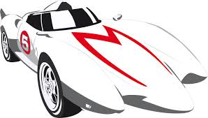

It was originally serialized in print in Shueisha's 1966 Shōnen Book. It was released in tankōbon book form by Sun Wide Comics, and later re-released in Japan by Fusosha. Adapted into anime by Tatsunoko Productions, its 52 episodes aired on Fuji TV from April 1967 to March 1968. The anime was later re-broadcast on Tokyo MX from July 1 to September 25, 2008.
 Max5 Nowadays